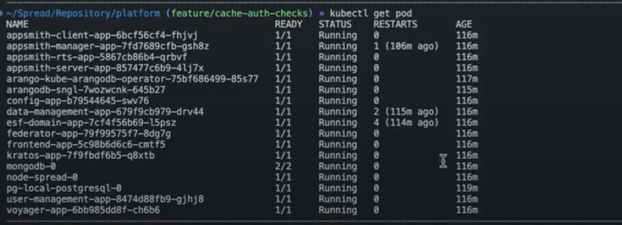
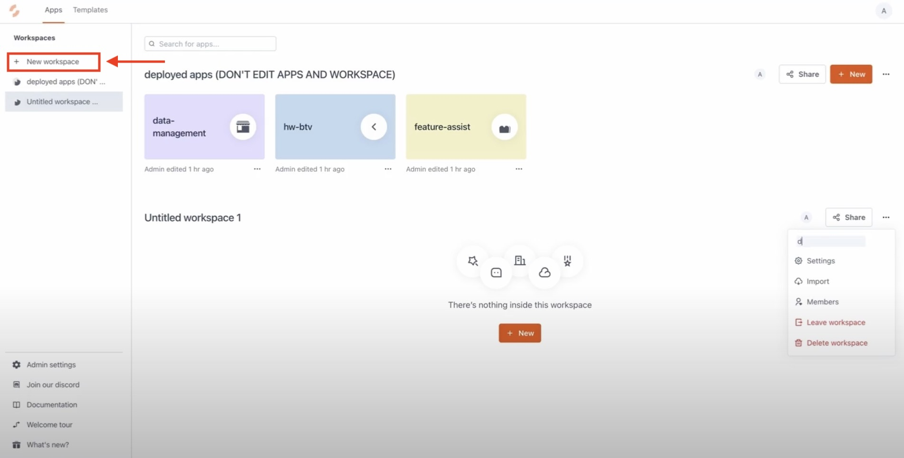
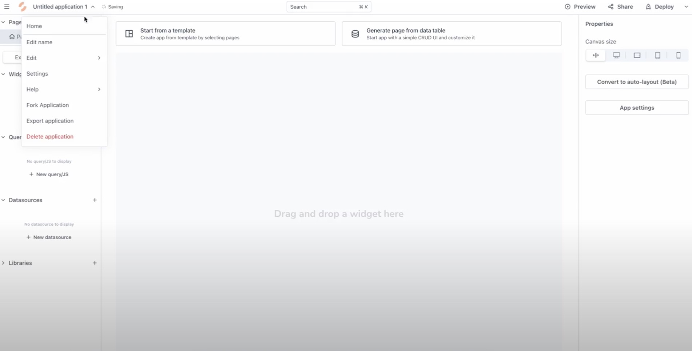
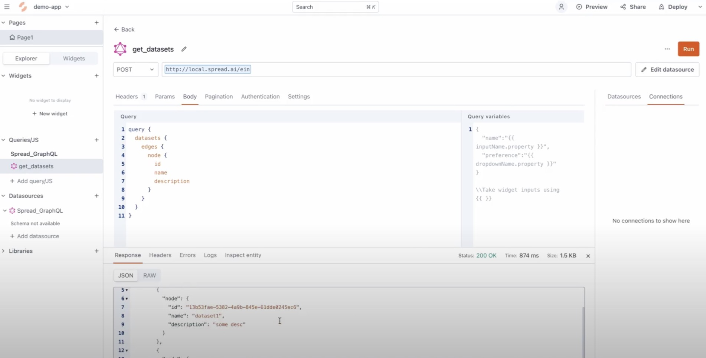
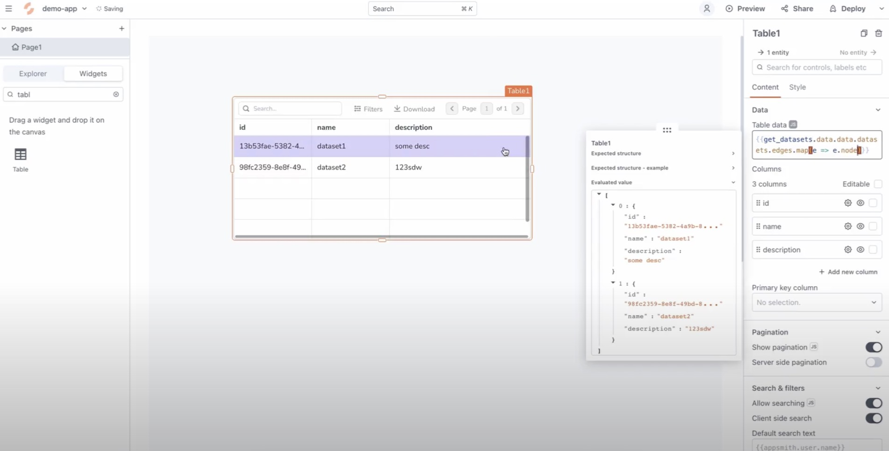
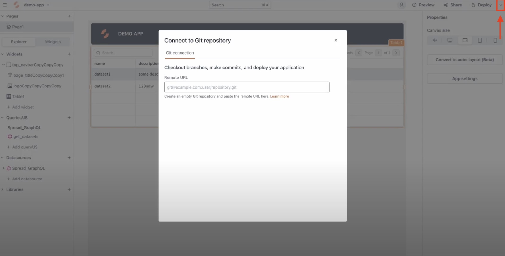

Using SPREAD Studio locally
Using the SPREAD Studio application on your local environment allows you to test, debug, and work on your application before deploying it for general use. We generally recommend that you maintain version control of your application using git. For more on version control, see the Version Control at Spread page.
Setting up your local environment
To create and manage applications locally you need to have the following tools and knowledge:
- An understanding of how to make queries to your database.
- A code or text editor to edit your application. We recommend using Visual Studio Code, with the XYZ plugin installed for easy code completion.
- A Spread API key to fetch remote data. Create a separate API key with limited access rights for your local environment to limit the possibility of a security breach. For more on API keys, see Creating and Managing API Keys.
Restrictions and security
Running the local application has limitations that may affect your workflow:
- Eros in cursus turpis massa. Convallis aenean et tortor at risus viverra adipiscing at in.
- Aliquam eleifend mi in nulla posuere sollicitudin aliquam ultrices sagittis.
- Urna id volutpat lacus laoreet non curabitur. Urna neque viverra justo nec ultrices.
- Eu mi bibendum neque egestas congue quisque egestas diam in. Arcu cursus euismod quis viverra nibh cras pulvinar mattis nunc.
- Commodo elit at imperdiet dui. Enim nec dui nunc mattis enim ut.
Warning
Data is not encrypted at rest. Please ensure that your local disk is encrypted and that your workspace is secure.
Quickstart
This quickstart guide will introduce you to some of the main features of SPREAD Studio - such as making data queries, styling your application, and deploying it to production. Before starting, make sure that your local environment is set up correctly. The process is laid out in the diagram, with more detail in the list items.
graph LR
A([Create a new application<br> <a href="">Steps 1 - 3</a>]) --> B([Ingest data and add query<br> <a href="">Steps 4 - 5</a>]) --> C([Style application and push to GitHub<br> <a href="">Steps 6 - 8</a>]);1. Run your local setup
Start the process by running your local setup with the command kubectl get pod in your terminal or console inside the platform folder of your working directory. If your environment has been set up correctly, it should show something similar to following output.

You can then open studio.local.spread.ai in your browser to access SPREAD Studio. The landing page for SPREAD Studio will show your workspace, with your current applications. This workspace is automatically created when you deploy applications.
2. Create a new workspace
To create a new application select + New workspace and set the details of the workspace by accessing the dot menu on the right-hand side. You can change the workspace name, edit Settings, add Members to the workspace, and do other workspace management tasks through this menu.

Once the workspace has been configured to your needs select the + New button to start creating your application.
3. Configure your new application
The application configuration screen will pop up. On the top-left, where the text reads Untitled Application 1, you can select the title to access the settings menu. on the left-hand side you will find the elements that you can use to create your application, such as Widgets, Queries/JS, and Datasources. The central area of the screen is where you can drag widgets and move elements to create the UI of your application. The right-hand side of the screen will contain the properties of the selected element. On the top-right you can find options to Deploy the application.

4. Ingest data to populate your application
For this guide, we will ingest data by selecting the Explorer tab on the right-hand side and then selecting + New datasource in the Datasources section. This will open options to select the type of data source you would like to ingest data from. Select Authenticated GraphQL API. In the following screen enter "http://local.spread/ein" (without quotes) in to the URL field and select the Save button in the bottom-right corner. This is a data source URL we use strictly for demonstrations.
5. Make a data query to return a slice of the dataset
Select the Explorer tab on the right-hand side and then select + New query/JS. In the query box you can add a query to return only the data we need. For our purposes we will be using the following data query:
Once you have entered the query, you can select the Run button to run the query. The results of the query will display in the Response tab at the bottom of the screen.

Please Note
You can create your own query by going to [local.spread.ai/ein](http://local.spread.ai/ein) and playing with the interactive query creator.
6. Display the data
Widgets to display the data are under the Widgets tab. For this demo we will use the Table widget. Drag and drop the widget onto the central area of the screen. You will see that the Properties window on the right-hand side now has options for configuring your table. Under the Data section and in the Table data field enter query object created in Step 4. In our example the value is {{get_datasets.data.data.datasets.edges.map(e => e.node)}}.

You can also change the column order, make the columns editable, hide columns, and other options in the Properties window.
7. Style your application
To set fonts, colours, borders, shadows, theme and other style settings click an open space in the central area. This brings up the options for styling the whole application in the Properties window on the right-hand side under App settings - and not just the Properties for a particular widget. You can also add widgets - such as buttons and headers - to make your user interface easy to use.
To preview your application select Deploy in the top-right corner. For more information on Styling, see section...
8. Add your application to the launcher page
The default landing page for SPREAD Studio in a local environment is local.spread.ai. To add your newly created application to this launcher page we need to connect our local copy of the application to a GitHub repository. Select the small arrow next to the Deploy button in the top-right corner.

For more information on creating GitHub repositories and keys, see Create a Repo. Any further changes to your application can be pushed to the connected repository when you select the Deploy button or when you push a commit from the working directory to GitHub.
Download the build.yml GitHub Action and add it to your applications repository. This action will run when you deploy any changes to GitHub. For more information on creating and running Actions, see Creating Actions. One of the actions of build.yml is to generate a JSON file that is pushed to Amazon AWS.
...
Troubleshooting
Common problem scenario 1
Aliquam non erat leo. Pellentesque eu consectetur ex. Aenean risus orci, lobortis ac tempor at, venenatis at mi. Nulla sed venenatis velit, posuere lacinia neque. Morbi tortor orci, blandit et mollis vitae, finibus et nisl. Etiam sed justo sem. Proin eget pretium risus. Fusce tempor nisl quam, id dapibus urna viverra et. Nam efficitur nisi eu molestie varius. Morbi ac scelerisque magna. Donec efficitur quam eleifend faucibus bibendum. Fusce quis dolor nulla. Maecenas nec cursus velit. Nunc vulputate leo a mi ullamcorper bibendum.
Common problem scenario 2
In hac habitasse platea dictumst. Aenean tempus felis vel metus sodales, nec tristique sapien efficitur. Aenean pharetra ante quis posuere interdum. Aliquam erat volutpat. Integer vulputate, velit commodo mollis pellentesque, augue risus vestibulum metus, at faucibus ipsum felis quis magna. Nam in congue massa. Pellentesque a vehicula arcu. Nulla auctor, lectus sed consequat convallis, ligula dui faucibus tellus, vel vulputate massa ligula nec risus.
Common problem scenario 3
Curabitur eget porta risus. Fusce egestas tortor ut aliquet facilisis. Suspendisse quis sollicitudin eros, vel malesuada erat. Donec ac purus ullamcorper, lobortis nisi ut, bibendum elit. Fusce gravida sapien eu metus vulputate pulvinar. Curabitur nisi leo, mollis eu fringilla at, interdum accumsan quam. Praesent a fermentum massa. In finibus mollis sapien, a rhoncus turpis porttitor a. Praesent feugiat felis lacinia lacus accumsan, nec suscipit urna pellentesque. Proin metus nulla, mattis ac arcu vitae.
Last reviewed by Gauthier Ralph, Value Engineer (2020.01.10). This page is owned by Phileas Fogg, Junior Platform Engineer. If you don't understand the contents of this page or if the content is outdated, please help us make it better by emailing phileasf@spread.ai or post a message to the #ask-platform-team channel on Slack. Alternatively, you can create a ticket on the documentation board and assign it to Jean Passepartout.